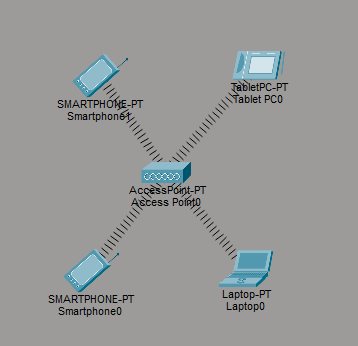

Il protocollo Wi-Fi originale (IEEE 802.11), è lo standard fondativo che ha stabilito le regole di base per permettere ai dispositivi di comunicare senza fili.
Ecco i quattro pilastri dello standard fondativo IEEE 802.11:
Il concetto di rete senza fili (WLAN) si basa sull'eliminazione dei cavi fisici, sostituendoli con le onde radio per permettere ai dispositivi di comunicare tra loro. In questo tipo di rete, le informazioni digitali vengono convertite in segnali elettromagnetici da un'antenna e inviate nell'aria, per poi essere ricevute da un altro apparecchio o da un punto centrale chiamato Access Point, che fa da vigile urbano per il traffico dati e connette la rete senza fili a quella internet di casa.

Il protocollo 802.11 è stato sviluppato a partire dal 1990 (con la pubblicazione ufficiale nel 1997) dal comitato IEEE. Il motivo principale della sua nascita fu la necessità di creare uno standard universale e gratuito per la connessione senza fili, poiché fino a quel momento ogni azienda creava sistemi proprietari che non potevano comunicare tra loro. L'obiettivo era estendere la flessibilità della rete Ethernet eliminando l'obbligo del cavo fisico. L'IEEE (Institute of Electrical and Electronics Engineers) ha creato il protocollo, nello specifico attraverso un gruppo di lavoro dedicato chiamato comitato IEEE 802.11.